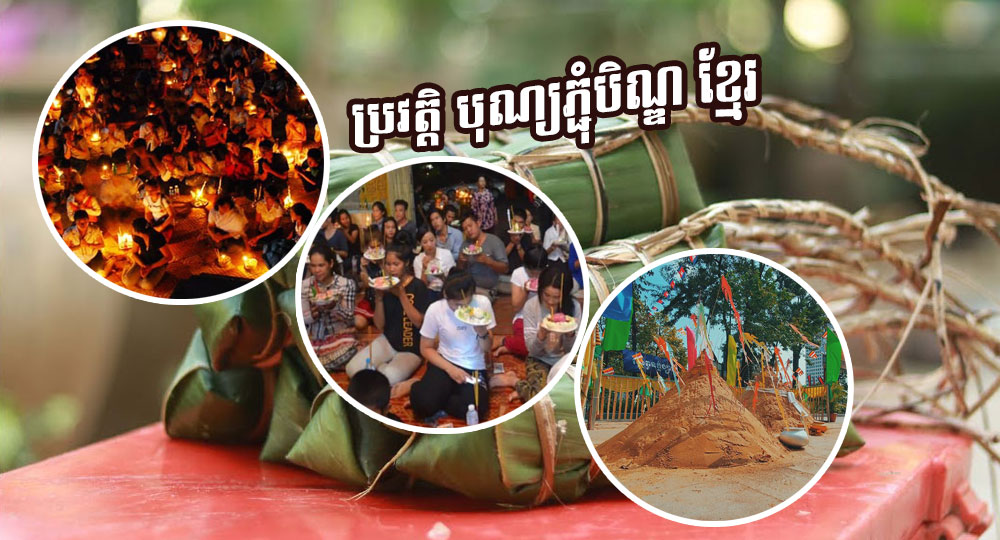

ប្រវត្តិបុណ្យភ្ជុំបិណ្ឌ បើតាមការយល់ដឹង ពិធីបុណ្យភ្ជុំបិណ្យប្រព្រឹត្តតាមទំនៀមពី គឺទំនៀម ព្រះពុទ្ធសាសនា និងទំនៀមអ្នកស្រុក ហើយបានអោយដឹងទៀតថា នៅភារនោច នៃខែ (ភទ្របទ) ដែលស្ថិតនៅក្រោមផ្ទៃមេឃពោរពេញ ទៅដោយពពក ទឹកពេញអាកាស បណ្តាលភាព ស្រអាប់ ក្នុងរាត្រីគ្មាន ពន្លឺព្រះចន្ទ័ដែលប្រកបដោយភ្លៀងរលឹម ជាប្រចាំនោះ គេមានជំនឿថា ស្តេចបច្ចុរាជ បានដោះលែងសត្វនរកប្រែត អោយមករកញ្ញាត្តិមិត្ត និង កូនចៅ ដើម្បីទទួលកុសលផលបុណ្យដែលកូនចៅ ដែលសត្វប្រែតនរកទាំងនោះឧទិ្ទសទៅអោយ ហើយបើថា សត្វប្រែតនរក នោះបានស្វិតស្វាញខិតខំរក គ្រប់ប្រាំពីរវត្ថ មិនឃើញនោះទេ សត្វប្រែតទាំង នោះនឹងទៅស្ថានរបស់ខ្លួនវិញ ដោយបានបន្សល់ទុកនូវបណ្តាសារ ដល់ កូនចៅដោយក្តីសមន្សសផង ។
បើយោងទៅតាមព្រះពុទ្ធសាសនា បានអោយដឹងថា ។មានព្រះពុទ្ធមួយព្រះ អង្គ ព្រះនាម ហោសសក្ត័ បានត្រាស់ដឹងនៅក្នុងលោកនៅពេលនោះ ព្រះ បិតាព្រះនាម មហិទ្ធរាជ មានបុត្រាបីអង្គ ផេ្សងទៀតក្រៅពី ហោសសក្ត័ ដោយបុត្រទាំងបីអង្គមានចិត្តជ្រះថា្លឃើញព្រះអង្គម្ចាស់បានត្រាស់ជាព្រះ ពុទ្ធព្រះនាមហោសសក្ត័ ចង់ធើ្វទានម្ចាស់បងក៏ប៉ុន្តែ ព្រះមហាក្សត្រព្រះបិតា ព្រះនាមមហិទរាជធ្វើទានអស់ចិត្តយើងសិនចាំឯងធ្វើ តែថ្ងៃក្រោយស្រុកកើត កុលតិយុទ្ធ តាមជាយដែនត្រូវបញ្ជូនទាំងបីរូបទៅបង្រាបការបោះបោរតាម ជាយដែនបានប្រកបដោយជោគជ័យបានសម្រេច ត្រលប់មកវិញព្រះមាតា បិតាមានសេចក្តីត្រេកអរ ហើយអនុញ្ញាតបុត្រចង់បានអីទៀត ព្រះបិតាអោយទាំង អស់ ព្រះអង្គទាំងបីរូបគ្មានចង់អ្វីក្រៅពីធ្វើទាននៅក្នុងសណ្តាក់របស់ម្ចាស់បងទេ សុំធ្វើទានជានិច្ចកាល។ សុំ៦ឆ្នាំ រហូតមកដល់ ៣ខែ គឺម្នាក់ ១ ខែៗ ព្រះរាជ បុត្រនឹងមានទព័របស់ព្រះអង្គ១០០០ ព្រះរាជ្យនឹងធ្វើរាជ្យ ទានស្លៀក ស ពាក់ស សម្រាប់សមារទានសីល ៣ខែ ។ ប្រគេនទានទៅ ដល់ព្រះភិក្ខុសង្ឃ មាន ព្រះពុទ្ធម្ចាស់បង ព្រះនាម ហោសសក្ត័ជាអធិបតី ពេលដែលធ្វើទានក៏ចាត់អោយនាយ ស្មៀនចាត់ចែងប្រាក់ឃំា្លង គ្រប់ ៣ខែសម្រាប់ភិក្ខុសង្ឃ និង ព្រះពុទ្ធនៅក្នុងវត្តទាំងអស់ ទំាងព្រះរាជ្យបុត្រទាំង បី និង ទព័ ១០០០ទៀតព្រមទាំងភិក្ខុសង្ឃទាំងអស់ផង។ ការធ្វើយូរៗទៅក្រុមអ្នកចាត់ចែងទានមានសេចក្តីប្រមាថ បានឃើញម្ហូបចំណី ពិសារតែងតែលូកហូម ឬ ក៏សាកមុនហើយកូនយំទារខ្លះចេះតែហុច មុខ ហុចក្រោយមើលទៅពិបាក ក៏ទទួលទានពេញបទទៅ លែងគិតអ្វីទំាងអស់ លែងខា្លចបាប ទោះបីមុខព្រះពុទ្ធក៏ដោយ ក្រោយពីស្លាប់ទៅទើបក្រុមប្រមាថ សុំទានចាត់ចែង។ហើយបានព្រះពុទ្ធត្រាស់ព្រះពុទ្ធព្រះនាម បកុសង្ឃឃ ពួកប្រែតសួរទៅ ព្រះពុទ្ធបានមានពុទ្ធធិការថា ចាំសួរព្រះពុទ្ធជំនាន់ក្រោយ ហើយព្រះពុទ្ធ ព្រះកោរនាគត្រាស់ដឹងក៏សួរទៀត បានឆ្លើយដូចព្រះពុទ្ធមុនៗ រហូតមកដល់ព្រះពុទ្ធព្រះនាម សមណគោត្តម មរណគ្រូនៃយើង បានត្រាស់ដឹងក៏ សួរទៀតហើយព្រះពុទ្ធមានពុទ្ធធិការថា ចាំមើលក្រុមញ្ញាតិ របស់អ្នកធ្វើទាននៅក្នុង សម្នាក់របស់សន្ថាពុទ្ធ ចាំសន្ថាពុទ្ធនិងញាំងទាននោះ អោយសម្រេចនូវទានទាំងឡាយ។ នាយស្មៀនកាលនោះ ដែលបានចាត់ចែង ទានផ្សេងៗ ប្រគេនភិក្ខុសង្ឃ ពេលនោះមិនបានប្រមាណ បានបង្កើតស្តេច ពុទ្ធធិសាល។ដូចនេះឃើញថា មានបាបខ្លាំងណាស់ ដោយសារតែ លូក ឬ ហូប មុននឹងព្រះពុទ្ធនោះ សម្រាប់អ្នកធ្វើគឺមិនអីនោះទេ ទោះបីជាហេវ ឬ ឃ្លានយ៉ាងណា កុំហូបមុនព្រះពុទ្ធអោយសោះ។ចំនុចដែល ជាអំពើបាបនឹង ទាក់ទងទៅនឹង ការមើលស្រាលតួររបស់ព្រះអង្គ យករបស់គេដោយ អត់បានប្រាប់ម្ចាស់គេ ។គោលការធំៗដែលមានអត្ថប្រយោជន៏ នៅក្នុងគម្ពីបុរាណមិនបានបញ្ជាក់អោយច្បាស់លាស់នោះទេ តែគោលធំនៃពីធីបុណ្យភ្ជុំបិណ្ឌ ដែលមានរយះពេល ១៥ថ្ងៃនេះ ឃើញថាមានប្រយោជន៏ច្រើនណាស់សម្រាប់ពុទ្ធបរិស័ទ ប្រយោជន៏ទី១ នោះ យើធ្វើបុណ្យក្នុងលក្ខណះតបស្នងសងគុណទៅកាន់បុព្វការីជនដែលបានចែក ឋានទៅហើយ ។ទី២ នោះយើងបានធ្វើបុណ្យសម្រាប់ខ្លួនយើងម្នាក់ៗ ដឹងស្រាប់ហើយថា មនុស្សយើងកើតមកក្នុងលោកនេះមានទ្រព្យសម្បត្តិច្រើន មានយុសក្តិបរិវាខ្ពង់ខ្ពស់យ៉ាងណាក៏ដោយ នូវមិនបានអប់រំចិត្ត គំនិតបានធ្វើ បុណ្យធ្វើទាន អោយច្រើនសម្រាប់ខ្លួនយើងនោះទេ គឺគ្មានប្រយោជន៏អ្វីទាំង អស់ បានកើតមកជាមនុស្សជាលាបដ៏ខ្ពង់ខ្ពស់ដ៏ក្រៃលែង កើតមកជាមនុស្ស ហើយរស់នៅដោយប្រាសចាកទោសប្រាស់ចារអកុសលជាការក្រ ហើយនៅ ពេលចូលរួចនូវស្តាប់ ព្រះធម៏បានអប់រំក្នុងខឹ្លមសារព្រះធម៏ ដូចជា ពេលភ្ជុំបិណ្ឌកាន់បិណ្ឌ គឺថាជាទូទៅលោកអ្នកប្រាជ្ញខាងធម្មសាស្រ្ត រៀបចំ អោយមាននមសការ ព្រះរតះត្រ័យ សមារទានសីល ដើម្បីនឹងផ្សព្វផ្សាយ នូវ មាគា៏ នៃព្រះពុទ្ធសាសនា អោយជ្រួតជា្រប ដែលសំខាន់ណាស់ ក្នុងការសម្តែងនេះ ព្រះជាម្ចាស់ត្រាស់ដឹងឡើងបាន ៤៥ព្រះវស្សា លោកមិនដែលចោលថ្ងៃណាសម្តែងព្រះធម៏ឡើយ ផ្សព្វផ្សាយ នូវពន្លឺដ៏ត្រចះត្រចង់ ក្នុងនោះដែលដើរត្រូវធ្វើល្អទៅបានដោយមាន ការយល់ ត្រូវនេះឯជាគោល ការរស់ប្រាស់ចាកទោសជាកម្រ ហើយយើងបានធ្វើបុណ្យ ទៅដល់អ្នកមានគុណរបស់យើងផងក៏ដូចជាយើងបានចូលមកអប់រំខ្លួនយើង ក្នុងនាមជាពុទ្ធបរិស័ទ។ហើយម្យ៉ាងទៀតនៅក្នុងរដូវដាក់បិណ្ឌ នេះជាទិសោត ក៏ប្រទេសយើងក៏ជាប្រទេសកសិកម្ម មិនមែនជាប្រទេសឧស្សាហកម្មទេ លោកអ្នកប្រាជ្ញបានឃើញច្បាស់ថា ពេលទំនេររបស់កសិករយើងមានតែ ពេលនឹងហើយ ដែល សន្ទូងកំពុងតែបែកគុម្ភ រួចរាល់ពីការងារ ពីសែ្រចំការ មួយរយះ មេឃត្រជាក់ល្អផង ដែលជាឪកាសងាយស្រួលទៅដល់ពុទ្ធបរិស័ទមកធ្វើបុណ្យ សន្សំកុសលនៅក្នុងវត្តនីមួយៗ នៅពេលស្តាប់ធម៏ប៉ារ៉ាលោកសូត្រ លោកអប់រំអំពីធម៏ដែលអោយវិនាសក្នុងជីវិតរបស់យើងកាលណាយើងស្គាល់ផ្លូវអបាយភូមិបានហើយយើងដើរតាមផ្លូវល្អ និង ផ្លូវត្រឹម ផ្លូវប្រពៃមានសេរីសួស្តីនៅក្នុងជីវិតមានចម្រើនលូតលាស់ណាស់ ដូចជាលោកសូត្រប៉ារ៉ាបវ។ជនណាបានប្រព្រឹត្តិល្បែងទាំងបីប្រការ ល្បែង ស្រី ល្បែងស្រា និង ល្បែងភ្នាល់ផ្សេងៗធ្វើទ្រព្យខ្លួនអោយអន្តរាយ ការល្បែងទាំង ឡាយនាំអោយវិនាស លោកប្រដៅជាពាក្យសាមញ្ញៗ ហើយមនុស្សយើងស្តាប់គ្នាបាន ហើយអាចកែខ្លួនបាន។ ចំណង់ចំណូលចិត្តរបស់យើងតែងតែងាកទៅរកអំពើអបាយមុខទាំងអស់នោះ ។ ព្រះពុទ្ធសាសនានោះបានប្រាប់ផ្លូវមនុស្សអោយចាកចេញផុតពីអំពើនាំអោយវិនាសទាំងអស់នោះហើយ ងាកមករកផ្លូវដែលមានសេរីសួស្តី ជោគជ័យម័ង្គល។ ទី៣ដើម្បីបង្កើតសាមគ្គីធម៌រវាងព្រះពុទ្ធសាសនា នឹង ពុទ្ធបទរិស័ទនៅទីជិតទីឆ្ងាយដែលពីមុនមិនធ្លាប់ស្គាល់គ្នាក្រោយមកក៏ យើងបានស្គាល់គ្នានៅតាមវត្តអារាមនីមួយៗ នឹងបានស្តាប់ធម៌ជាមួយគ្នា បានសមាទានសីល បានថ្វាយបង្គំព្រះរត័នត្រ័យ បានរាប់បាទ បានស្តាប់ព្រះធម៌ពន្យល់អប់រំគ្នា ពីដើមភូមិខាងលិចវត្តទាស់ជាមួយភូមិខាង កើតវត្ត ភូមិខាងជើងលួចភូមិខាងត្បូងវត្តជាដើម ។ក្រោយពីបានស្តាប់ធម៌សុទ្ធតែគ្នាឯង សុទ្ធតែជាមនុស្សចង់សុខហេតុត្រូវទៅ លួចគ្នា មិនត្រឹមតែឈប់លួចគ្នាប៉ុណ្ណោះទេ ថែមទាំងស្រលាញ់រាប់អាន ចងសម្ពាញ់ជាមិត្ត ជាភក្ត័ មានទុក្ខធុរះអ្នកណាមានជម្ងឺ ឈឺធ្ងន់អ្នកណាក្រ ខ្សត់ មនុស្សបួនដប់ភូមិទៅជួយគ្នា។ បើតាមការសិក្សាបុណ្យភ្ជុំបិណ្ឌមាន ពីបែបរបៀបខុសគ្នាគឺតាមបែប ព្រះពុទ្ធសាសនា និងសាសនាជីនៃខ្មែរបុរាណ និងផលប្រយោជន៏នៃពីធីនេះដូចជា បើបុណ្យភ្ជុំបិណ្ឌតាមព្រះ ពុទ្ធសាសនា គឺគេហៅភ្ជុំបិណ្ឌ បិណ្ឌលាក់គេភ្នូតបាយមួយដុំ ហើយនៅបុណ្យភ្ជុំនឹង គេប្រ មូលបាយនឹង ទៀន ធូម ស្បង់ជីពរ ចំណីអាហារជាដើម ស្ករ តែហើយយក ទៅប្រគេនព្រះសង្ឃ
នៅក្នុងវត្តភ្ជុំបិណ្យនឹងភ្ជុំបិណ្យនៅក្នុងវត្តជាមួយព្រះសង្ឃ។ ឯប្រភេទដែលជាប់នឹងឬសគល់ខ្មែរ ជាប់សាសនាជីនឹង ជាភ្ជុំទទេរទេ មានតែពាក្យថា ភ្ជុំមួយមាត់ ហើយយើងអាចថា ជាទំនៀមទំលាប់តាមបែប ខែ្មរសុទ្ធសាតនឹង ពីព្រោះតាមព្រះពុទ្ធសាសនា អត់ទទួលថាមានព្រលឹង នៅជាប់ជាអចិន្ត្រៃយ៏ទេ ជាអនិចាក់ទាំងអស់ ដូចនេះបើស្លាប់ទៅខណ្ឌនឹងបន្ត គ្នាទៅកើតជាអ្វីមួយទៀត លែងជាជីដូនជីតាយើង ជីដូនជីតាយើងនៅតែជីដូនជីតាយើង ឪពុកម្តាយយើងនៅតែឪពុក ម្តាយយើង។ ដូច្នេះកាលណាយើងនៅតែធ្វើបុណ្យភ្ជុំនឹងយើងនឹងជួបអ្នករស់ ជាមួយនឹងខ្មោច ជីដូនជីតា បងប្អូនរបស់យើងសព្វគ្រប់នឹង មានន័យថាយើង នឹងមិនមែនកាន់ព្រះពុទ្ធសាសនាពិតប្រាកដទេ មិនជាបព្ហាអីទេ តែយើងធ្វើតាមរបៀបតពីដូនតាយូរយាមកហើយ ។នេះជាប្រភេទធំមួយ គឺ ភ្ជុំភា្ជប់ ជួបជុំគ្នារវាងអ្នករស់នឹងអ្នកស្លាប់ ដែលមានន័យធំណាស់ បើយើងកាន់ របៀបនេះអោយជាប់ អោយពិតប្រាកដ វាជាប់ទៅនឹងអ្នកស្លាប់ ដែលជាវីរបុរស បានធ្វើការអោយជាតិ បម្រើជាតិ ធ្វើមេទ័ពយ៉ាងម៉េច ជាអ្នក ប្រាជ្ង ជាអ្នកអក្សរសាស្ត្រ ជាជាងចម្លាក់ មានផ្សេងៗទៀត នឹង ដែលមានរូប ចម្លាក់ រូបសម្គល់អី្វផ្សេងៗទៅ។ ហើយនៅក្នុងព្រះពុទ្ធសាសនាគ្មានអ្វីនោះទេ យើងសំពះតែព្រះពុទ្ធព្រះអង្គ តែមួយគត់ប៉ុណ្ណោះមិនជឿទៅអ្វីតាផ្តេរតាផ្តាសនោះទេ ដែលជាហេតុនាំអោយយើងនឹងខុស។ ហើយនឹងការធ្វើភ្ជុំជាមួយ មនុស្សរស់នឹងវិញ ប្រភេទធំមួយគឺ ភ្ជុំអោយធាតុមនុស្សស្រីប្រុស អោយស្គាល់គ្នា ស្រលាញ់គ្នា ជាមួយនឹងសត្វ នេះហើយជាលក្ខណះពិសេស មួយនៅក្នុងសាសនាជីនឹង។ អោយមនុស្សជួបជុំជាមួយនឹងសត្វ ត្រង់ថាថ្ងៃពិធីនឹង យើងមាន សត្វគោ សត្វក្របីគេដុសលាង គេជូត គេលាប ម្សៅ បាញ់ទឹកអប់ គ្រឿងសំអាង អោយចំណីអាហារឆា្ងញ់ៗ សព្វគ្រប់ទៅដល់សត្វទាំងនោះ ។ហើយពួកអ្នកចាស់ទុំ មេផ្ទះ និយាយលួង លោមសត្វ សុំទោសសត្វនឹងថា កាលពីមុនបានប្រើប្រាស់ធ្វើបាប វៃ ជេរ ខុសត្រូវ អីៗផ្សេងៗនឹង កុំអោយប្រកែប្រកាន់ យកទោសយកព័យ អោយសោះ ហើយសន្យាថា និងមិនធ្វើបាបបន្តទៀតទេ។ យកអំបោះស ដែលជាទង់ប្រលឹងយើងនឹង មកចងតាំងពីក្រឡោនផ្ទះគឺមេផ្ទះ ស្ត្រីស្រីមេម្តាយនឹង ជាព្រះមេដែលយើងគោរពជាប់ ពីមនុស្សទៅជាប់នឹងសត្វផងដែរ។ ពាក្យថាបុណ្យៗ បុណ្យភ្ជុំបើនិយាយតាមពាក្យខ្មែរសុទ្ធគឺ បូណនោះទេ គឺបូណភ្ជុំ គេមិនថាបុណ្យទេ មានន័យថា បុណ្យបាបរបៀប ឥណ្ឌា របៀបព្រះពុទ្ធសាសនា មាននរក មានឋានសួគ៌ ហើយបើបូណយើងពូន យើងធ្វើអោយលូតលាស់ឡើង។ មេដឹកនាំសាសនាជីរៀបចំពិធីភ្ជុំនឹងតាម របៀប ការធ្វើដែលជាតួធំ មិនមែនជាព្រះសង្ឃ លោកអាចារ្យនោះទេ គឺជាមេ ជាព្រះមេ ជាមេផ្ទះជាស្ត្រីដែលជាម្តាយ ដែលជាជីដូន ដែលគេចាត់ទុកជាមេក្រឡោង អោយតម្លៃធំជាងគេនោះ អ្នកនោះជាមេពិធី ធ្វើអ្វីសព្វគ្រប់ទាំងអស់។ អ្នកណាធ្វើនៅក្នុងវត្តក៏ធ្វើទៅ ហើយអ្នកទាំងអស់គ្នា មិនអាចទៅវត្តទាំងអស់បានទេ។គេធ្វើនៅក្នុងវាទ តាជី យាយជី ធ្វើនៅក្នុង ភូមិក្នុងស្រុក ដូចជាបុណ្យចូលឆ្នាំគេធ្វើនៅក្នុងវាទក៏ធ្វើ គេធ្វើនៅក្នុងផ្ទះ ក្នុងភូមិមួយៗ នឹងក៏ធ្វើ អោយតែជួបជុំគ្នា ។ការធ្វើនឹងចាំបាច់គឺ ត្រូវគោរព ឪពុក ម្តាយ គឺអញ្ជើញក្រុងពាលី ទៀនប្រាំ ធូបប្រាំ មានផ្ទិលទឹក មានអំបោះស ជាដរាប។ ពីព្រោះទឹកនឹង តំណាងអោយធាតុ បាក្រពើ អំបោះស ជាទង់ព្រលឹងរបស់យើង ហើយនឹងធាតុស្រីដែលជាម្តាយ របស់យើង រូបនាងគងហីង ហើយនៅជាមួយនឹងសត្វទាំងអស់ ដូចជា ឆ្កែ ឆ្មា អ្វីៗជាដើម។ ពេលនឹង សត្វសប្បាយណាស់ ដោយបានម្ហូបអាហារ ចំណីស៊ី ស្រួលបួល។ ភ្ជុំជួបគ្នារវាង ម្ចាស់ផ្ទះ នឹង អ្នកបម្រើការនៅក្នុងផ្ទះ បើយើង និយាយពីដើមមានខ្ញុំកំដរហែរហប រស់នៅដូចក្រុមសាច់ញ្ញាតិ លែងអោយប្រកែប្រកាន់ ជេរប្រមាតប្រទិច អីទៀតហើយ គ្រប់ទំនាក់ទំនងរវាងមនុស្សនៅក្នុងសង្គម គឺគេជួបជុំគ្នាឡើងវិញដើម្បី សម្រួលទំនាក់ទំនងកុំអោយមានការរំលោភ គំហែងគំរាមគា្ន ដូច្នេះហើយទើប បានជាគេប្រើពាក្យថា ភ្ជុំ ប៉ុណ្ណឹង គេមិនថា ភ្ជុំបិណ្ឌទេ។ កាលបរិច្ឆេកការប្រារព្ធពិធី បុណ្យភ្ជុំគេកំណត់នៅពេលធំ គឺ នៅក្នុងមួយថ្ងៃនឹង ហើយរួចហើយគេចេះតែបន្ត បន្ថិចៗ រហូតទៅដល់ពេលបណ្តែតលយប្រទីត បណ្តែតភ្លើទៀនទៅតាមទឹក គឺថា គេជូនប្រលឹងខ្មោចដែលបានស្លាប់នឹង អោយទៅឋានអរូបិយនឹងវិញ អោយទៅតាមទឹក។ ដោយនៅជំនាន់អង្គរ នៅ ក្នុងទឹកបារាយ ក្នុងចង្អូរទឹក ជំវិញប្រាសាទ អ្នកស្រុកទៅបណ្តែតប្រទីត ។
អត្ថប្រយោជន៏ចំពោះមនុស្សរស់ត្រូវគិតទៅដល់មនុស្សសា្លប់ គឺប្រយោជន៏ធំ គឺអោយយើងស្គាល់ស្រុក ស្គាល់ទីជាតិកំណើត ស្គាលទឹកដីរបស់យើង ស្គាល់ ស្នាដៃទឹកដៃនៃជាតិយើងដែលបានធ្វើតគ្នារៀងមក គ្រប់គ្រាពេលមាន ផលលំបាក ពេលមានគ្រោះថា្នក់ ឬពេលសប្បាយអោយយើងចាំ ប្រវត្តិសាស្ត្ររបស់យើងដែលជា កម្លាំងជាតិមួយធំណាស់ ។ បើយើងមិនចាំ នូវប្រវត្តិសាស្ត្ររបស់យើងទេ យើងនៅតែកាត់ដីទុកអោយគេ បរទេសមកយក មកបុក មកសង្កិនមករុករាន ។ សរុបមក ភ្ជុំ មានសកម្មភាព បីយ៉ាង គឺ ១ ភ្ជាប់បច្ចុប្បន្ន ទៅនឹង អតីតកាល គឺអោយមានសតិសម្បតិញ្ញះ ភ្ជាក់ អោយដឹងរឿងប្រវត្តិ កំណើត គឺយល់ប្រវត្តិសាស្ត្ររបស់យើង ដឹងកើតសា្លប់ ល្អចម្រើនយ៉ាងម៉េច បាត់ទឹកបាត់ដីយ៉ាងម៉េច ទម្លាប់អោយយើងមាន ខួរក្បាលនឹងជាប់ទៅនឹង រឿងប្រវត្តិសាស្ត្ររបស់យើង កុំអោយភ្លេចធាតុកំណើតរបស់យើង ។ ២ មនុស្សដែលនៅរស់នៅជាមួយគ្នា ជាឪ្យកាសបានជួបជុំគ្នា ចងជាតិកំណើតរបស់យើង តាមអំបោះស ថែមទាំងនៅក្នុងភូមិ ក្នុងស្រុក ក្នុងខេត្តទៀតផង។ ៣ ភ្ជុំមួយទៀត គឺថា អោយយើងភ្ជាប់ទៅនឹង សត្វ ទៅនឹង ធម្មជាតិ ទូទៅទាំងអស់ ដោយបញ្ជាក់ថា ការធ្វើរបៀបនឹងមិនមែនជាបុណ្យទេ តាមខ្មែរគេថា បូណ គឺជួយដាស់តឿន រំលឹក ការគ្រប់បែបយ៉ាងកុំអោយយើងភ្លេច អោយយើងកាន់ តែយល់ កាន់តែចម្រើតែចម្រើនឡើងទៀត។ កាលណាយើងហៅថា បុណ្យ ចាំថា យកផលនឹងទៅឡើងឋានសូគ៌ ។យើងកើតមកទៅជាអ្នកធំ អ្នកមានទ្រព្យសម្បត្តិ មានអំណាចតែប៉ុណ្ណឹង នេះហើយថា ការធ្វើ បុណ្យ។ ចំពោះបូណវិញ ជាការកសាងការបង្កបង្កើន អោយលូតលាស់អោយភា្ជក់ រលឹក អោយយល់ អោយមានប្រាជ្ញា អោយយល់ពិត អោយមនុស្សចម្រើន សប្បូរសប្បាយរុងរឿងទាំងអស់គ្នា ។កាលណាយើងចេះភ្ជុំ ជាតិកំណើត ជាតិសាស្ត្ររបស់យើង តាមអំបោះស តាមព្រលឹងរបស់យើងនឹង ហើយយើពួតដៃ ពួតកម្លាំងគ្នា រួមគំនិត អោយជាតិរបស់យើងអោយចេះការ ពារ ចេះស្រលាញ់ ទឹកដីអោយកាន់តែខ្លាំក្លាថែមទៀត។ ភ្ជុំបច្ចុប្បន្នកាលនេះ ទៅនឹង អតីតកាលនេះ អោយមានសតិសម្បត្តិញ្ញះ ផ្នែកប្រវត្តិសាស្ត្រ អោយយើងចាំជាតិកំណើត ការរស់ស្លាប់ ការពិបាក សប្បាយជាមួយគ្នា គឺយើងមិនធ្លាក់ខ្លួន នាំអោយអន្តរាយ ជៀសវាងសេចក្តីខូចខាតអន្តរាយជាតិ របស់យើង។ ប្រសិនបើយើងមិនរំលឹងអ្វីដែលបានស្លាប់ទៅហើយ បាត់ទៅហើយ ពីអតីតកាលនោះទេ គឺយើងគ្មានអ្វីជាតម្លៃដុំកុំភួននោះទេ។ ហើយកាលណាយើងមិនចេះភ្ជុំរវាងមនុស្សរស់ជាមួយសត្វ ធម្មជាតិនោះទេ ចិត្តសាហាវរបស់យើង រំលោភទៅលើសត្វ ដែលគ្នាមិនចេះនិយាយស្តីក៏ដោយ ក៏អាចមានគំនិតឃោរឃៅ ហើយចិត្តអាក្រក់ ចិត្តកាច នៅតែដុះដាល ហើយបើចេះអាណិតសត្វ ឈើព្រៃធម្មជាតិនឹង កសាងចិត្តគំនិត នេះហើយជាការបូណ ដើម្បីអោយក្លាយជាមនុស្សល្អ។